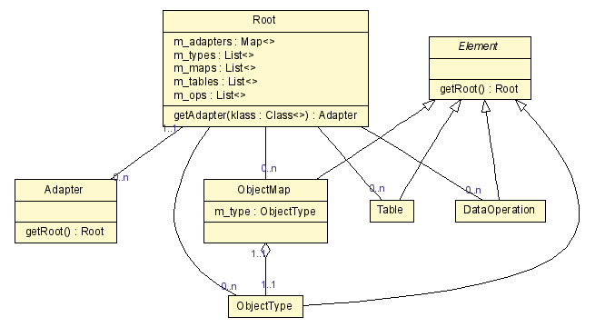

Class Diagram Example: Multiple Views Through Command-Line Options
Vadim Nasardinov noted that an advantage of UMLGraph over many
GUI-oriented UML drawing tools is the ability
to generate different views of a diagram
from the same source description.
The following two diagrams were generated from the same source;
a Makefile illustrates a way to organize this process.
Class Overview

Detailed Class View

Java Description
// Author: Vadim Nasardinov
import java.util.List;
import java.util.Map;
/**
* @assoc "1..1" - "0..n" Adapter
* @assoc "" - "0..n" ObjectType
* @assoc "" - "0..n" ObjectMap
* @assoc "" - "0..n" Table
* @assoc "" - "0..n" DataOperation
**/
class Root {
private Map m_adapters;
private List m_types;
private List m_maps;
private List m_tables;
private List m_ops;
public Adapter getAdapter(Class klass) {}
}
class Adapter {
public Root getRoot();
}
abstract class Element {
Root getRoot() {}
}
class ObjectType extends Element {}
/**
* @has "1..1" - "1..1" ObjectType
**/
class ObjectMap extends Element {
private ObjectType m_type;
}
class Table extends Element {}
class DataOperation extends Element {}
Makefile
# Author: Vadim Nasardinov (vadimn@redhat.com)
# Since: 2004-05-26
# See: http://www.spinellis.gr/sw/umlgraph/doc/ceg-mv.html
# Requires: graphviz
# Requires: javadoc
# Requires: JAVA_HOME/lib/tools.jar
.PHONY : clean all dot png
UMLGRAPH := /var/vadim/binaries/UMLGraph-4.8
uml_graph := $(UMLGRAPH)/lib/UmlGraph.jar
java_files := $(shell find diagrams -name *.java)
dot_files := $(subst .java,.dot,$(java_files))
dot_files := $(foreach dot, $(dot_files), build/$(dot))
dot_files += $(subst .dot,-small.dot,$(dot_files))
png_files := $(subst .dot,.png,$(dot_files))
jd:=javadoc
jd_flags := -docletpath $(uml_graph) -doclet org.umlgraph.doclet.UmlGraph -private
jd_flags += -nodefontsize 9 -edgefontsize 9
jd_flags += -nodefillcolor LemonChiffon
detailed_flags := -attributes -operations -types
all: png
clean:
rm -rf build
build/%.dot : %.java
mkdir -p $(dir $@)
$(jd) $(jd_flags) $(detailed_flags) -output $@ $<
build/%-small.dot : %.java
mkdir -p $(dir $@)
$(jd) $(jd_flags) -output $@ $<
%.png : %.dot
dot -Nheight=0.2 -Elabelfontcolor=DarkSlateBlue -Elabelfontsize=8 -Tpng -o $@ $<
build/%.png : %.fig
mkdir -p $(dir $@)
fig2dev -L png -S 4 $< $@
dot: $(dot_files)
png: $(png_files)
build/%.png : %.png
mkdir -p $(dir $@)
cp $< $@
# Example usage:
# make debug-java_files
# make debug-png_files
debug-%:
@echo $* is $($*)
 Last change: Tuesday, October 28, 2014 4:28 pm
Last change: Tuesday, October 28, 2014 4:28 pm